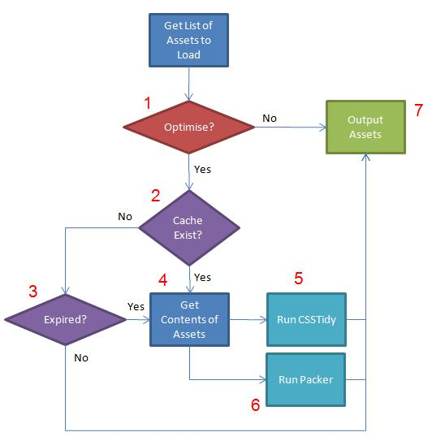

Asset Optimisation
The Asset Library is able to optimise assets for your users. If allowed the process will combine all assets into a single file. It will then optimise this file using optimisation plugins (if available) before storing a copy of the new file in the asset cache. This means the user will be served the smallest most efficent asset file possible, while at the same time keeping your asset files readable for development.
By combining assets into single files this reduces the number of HTTP requests yours users have to make to the site, thus speeding up the page loading times.
Note: Please make sure assets/cache/ is writable before attemtping to use Asset Optimisation.
Process
Steps
- Optimise:
In the Asset Library config file there is a setting optimise_assets. This must be set to TRUE if you want optimisation to occur. If set to FALSE the required assets will just be outputted.
- Does a Cache Exist:
For each type of asset (CSS or JS) and for each position (header or footer) it will check if an asset files exists in the given asset cache directory.
- Has the Cache Expired:
If a cache file has been found, check it is not too old. This value is set in the Asset Library config file in a setting called asset_caching/expire_time. This is the time in hours for which a cached asset file will be kept. After this the asset cache directory will be cleaned of all old asset cache's and new ones shall be created.
- Get Contents of Assets:
The process will iterate over all specified assets and combine them into a single asset file. Please check the Asset Array config setting for details about dynamic assets and how to handle them in this case.
- Run CSS Optimisation:
If a CSSTidy has been specified run the optimiser, please see CSS Compression for more details.
- Run JS Optimisation:
If a JS Packer has been specified run the packer, please see JS Compression for more details.
- Output Assets:
Depending on if a cache was created or not. All asset files needed for the page are outputted into either the header or footer of the document as required.